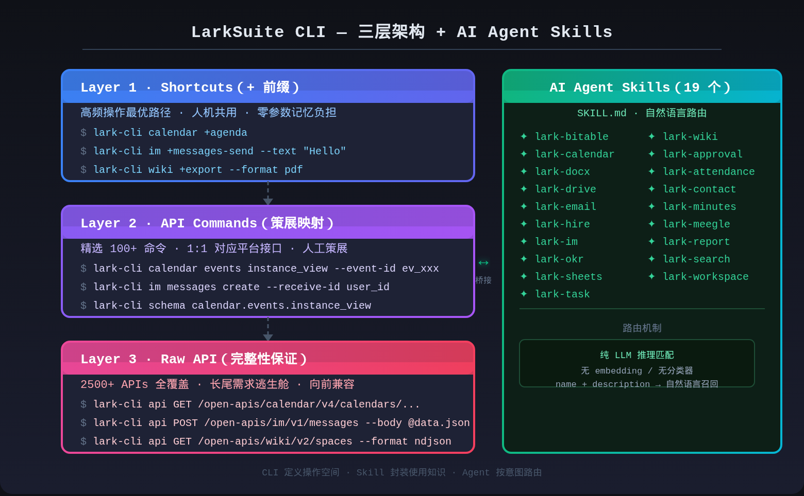
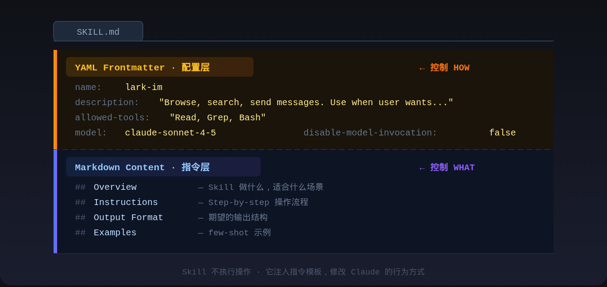
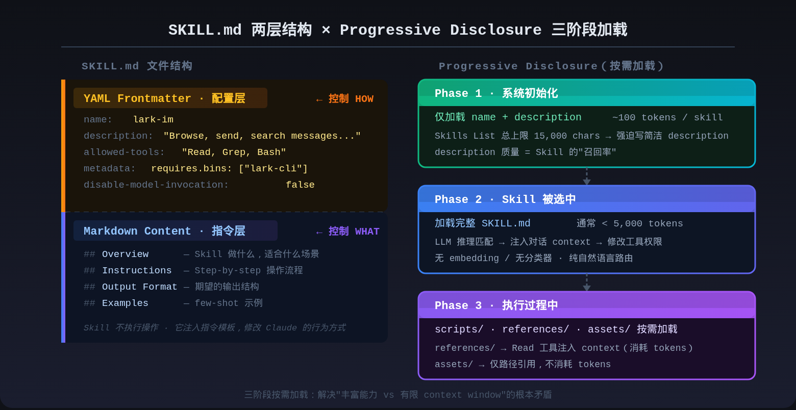

CLI 设计原则 × 面向 Agent 的 Skill 设计，以 LarkSuite 三层架构为实践案例
引言：你的 CLI 真的是给人用的吗？
一个被低估的事实是：大多数人设计的平台 CLI，其实是把 API 穿了件外套——参数名复制 API 字段名，输出格式原样透传 JSON，帮助文档基本等于 API 文档的 Markdown 版。
这不是在说某一家平台不好，这几乎是所有平台 CLI 第一版的样子。问题在于，这条路的终点是 AWS CLI v1——2500 个命令，aws ec2 describe-instances 的输出是一坨 JSON，用户的第一反应通常是"怎么又要查文档"？这么下去何时是个头？
然后 2024 年以来，事情变得更复杂了：Claude Code、Cursor、Copilot 开始直接调用 CLI。调用者不再只是人，还有会犯"幻觉"的 LLM。“Agent call success rate”（Agent 调用成功率）成了一个新的质量指标。
本文想梳理几件事：
- CLI 设计 40 年积累下来的核心原则是什么
- AI 时代的 Built-in Skill 设计范式是什么
- 当你要同时服务人类和 Agent 时，有没有可以参考的架构
核心案例是 LarkSuite CLI：200+ 命令、19 个 AI Agent Skill、11 个业务域，目前我见过的最完整的"人机共用 CLI"实践。
一、当前 CLI 设计应该有的三个原则
为人设计，兼容机器
原始 UNIX 命令是 machine-first 的——cp 成功时一声不吭，失败时扔出你看不懂的错误码，因为当时的调用者主要是脚本，不是人。
现代 CLI 首先是给人用的工具。git push 会告诉你推了几个 commit，remote 状态是什么；npm install 进度条跑着；heroku pss 拼错了，会问你：“Did you mean ps? [y/n]”。
说到这里不得不提 thefuck——一个风靡 zsh 用户群的神器，命令打错了只要输一个 fuck，它自动帮你修正并重新执行。背后原理就是 CLI 的错误信息够清晰，所以可以被解析。CLI 写得越 human-friendly，工具链就越能帮你兜底。
具体实现层面，human-first 和 machine-friendly 并不冲突：
- stdout 只输出主要内容，stderr 输出日志和错误（否则 pipe 链路会乱）
- 支持
--json，让机器可以消费结构化输出 - exit code 的语义必须正确（0=成功，非零=失败，脚本里用
&&和||依赖这个）
CLI as a workflow：Pipeline 才是接口
UNIX 哲学的精髓：小工具通过 pipe 组合成大系统。
1 | cat error.log | grep "timeout" | awk '{print $1}' | sort | uniq -c | sort -rn |
这一行命令用了 6 个工具，每个工具只做一件事，但组合起来完成了复杂的日志分析。这就是 UNIX 几十年沉淀下来最优秀的设计——stdout 是接口，pipe 是集成机制。
这也意味着设计 CLI 要考虑好隐含设定：不要把无关内容混进 stdout（那是给 pipe 下游的），进度、日志、警告都去 stderr；支持 stdin 输入（用 - 作为 stdin 别名）；--json 让输出可以被 jq 处理；exit code 语义必须正确。
GitHub CLI 的 gh api --paginate --jq '.[] | .name' 是 pipeline 设计的好示范：REST/GraphQL API 访问、分页、JQ 过滤，一行串完。
现在有了 AI Agent 之后，pipeline 的概念延伸了——Agent 也会把你的 CLI 当成 pipeline 里的一环，用 --format ndjson 流式消费输出，用 exit code 判断是否继续。
顺便吐槽一下 AWS CLI：它几乎是 pipeline 反面教材的集大成者。
aws ec2 describe-instances默认输出是完整 JSON 树，字段嵌套四五层，没有--query或jq基本不可读；同一个资源在不同子命令里输出结构还不一样。这不是设计，这是 2500 个命令各自为政的结果。说实话，不知道这背后有多少亚麻人被折磨得夜夜失眠。
一致性：用完就会猜
用终端多了，很多命令的 flag 完全是凭肌肉记忆打出来的——-h 是 help，-v 是 verbose，-n 是 dry-run，--json 输出 JSON，-f 是 force。
违反这些约定的代价很高：用户需要为你的 CLI 单独建立一套记忆，而不是复用已有经验。
几个需要特别注意的点：
命名模式要一致。选了 noun verb 就坚持：docker container create、docker image pull，不要混着来。
配置优先级要明确：Flags > 环境变量 > 项目配置 > 用户配置 > 系统配置。用户在 CI 环境里用环境变量覆盖默认值，在本地用 flag 临时测试，这是标准操作。层次乱了，调试的时候没人知道为什么配置不生效。
不要允许子命令任意缩写。允许 mycmd i 作为 mycmd install 的缩写，看起来省事，实际上是在命名空间里埋地雷——你永远无法再加任何以 i 开头的子命令，否则现有脚本就挂了。
二、平台 CLI 化：以 LarkSuite 为例的三层架构
平台 CLI 化面临的核心张力：平台 API 可能有几百甚至上千个，但用户不可能记住这么多命令。怎么在完整覆盖和可用性之间找到平衡？
LarkSuite CLI 的解法是三层架构：

Layer 1 Shortcuts 是这套设计里最有意思的部分。
+ 前缀完全不在 POSIX 规范里，看起来很奇怪。但它解决了一个真实问题：高频操作需要一个与底层 API 命令完全隔离的命名空间，同时在视觉上清晰地标识"这是快捷路径"。
Shortcut 对人类：lark-cli calendar +agenda 默认输出今天日程，表格格式，没有任何参数需要记忆。对 Agent：相同命令返回结构化 JSON，支持 --dry-run 预览，--as user 或 --as bot 切换身份。
关键洞察：Shortcuts 不是"给 AI 的简化版"，而是"人和 Agent 都能高成功率完成任务的最优设计"。 两者共享同一命令，不需要维护两套接口。
Layer 2 是策展（curation），不是机械映射。
“Auto-generated from Lark OAPI metadata, curated through evaluation and quality gates” — LarkSuite 的描述是有意义的。不是所有 API 都值得有一个命名命令，只有高频、语义清晰、适合脚本化的 API 才进入 Layer 2。这是信息架构决策，不是技术决策。
Layer 3 是完整性保证，不是懒人出路。
平台 API 的更新速度通常比 CLI 版本快，Raw API 层让用户可以立即使用新 API，不必等 CLI 迭代。同时，它也是一种向前兼容保险：就算 Layer 2 没有覆盖某个场景，用户也不必切换到 SDK 或 curl。
Agent-Native 设计的新挑战
“Every command is tested with real Agents, featuring concise parameters, smart defaults, and structured output to maximize Agent call success rates.”
这句话揭示了 Agent 时代平台 CLI 的新质量指标：Agent 调用成功率。LarkSuite 为此做了几个 agent-specific 设计：
输出格式矩阵
1 | --format pretty # 人类阅读 |
NDJSON 是 agent-native 设计的体现——Agent 边读边处理，不必等完整响应。
Schema 自省
1 | lark-cli schema calendar.events.instance_view |
Agent 调用前先理解接口结构，调用成功率大幅提升。
安全模型：提示注入防护、OS-native keychain 存储凭证、每个 Skill 绑定业务域最小 scope——这些是 AI 时代平台 CLI 新增的安全边界，传统 CLI 设计几乎不需要考虑。
三、AI Built-in Skill 设计范式
2025 年 10 月 Anthropic 发布 Agent Skills，12 月开放 SKILL.md 标准。同一份 SKILL.md 文件现在可以在 Claude Code、GitHub Copilot、Cursor、Gemini CLI、Windsurf、OpenAI Codex、Antigravity 七个平台运行——这是 CLI 扩展生态从未有过的跨平台能力。
Skill 不是代码，是指令模板
先把几个误解清掉：
- ❌ Skill 不是 Python 脚本或 JavaScript 函数（没有代码在运行）
- ❌ Skill 不在 system prompt 里（ChatGPT 把工具塞进 system prompt，导致 ~90% 的 token 预算被占用）
- ❌ Skill 不是传统 Tool（
Read、Bash执行操作返回结果；Skill 不执行，它修改 Claude 的"思考方式"）
正确定义：Skill = Prompt Template + Conversation Context Injection + Execution Context Modification
调用 Skill 时，Harness 主要在做两件事：把 SKILL.md 的内容注入对话 context；修改工具权限白名单和模型配置。Skill 不解决问题，它准备 Agent 的 Context 和 Action Space 去解决问题。
| 维度 | Traditional Tool | Skill |
|---|---|---|
| 执行模型 | 同步执行，返回结果 | Prompt 扩展，注入指令 |
| Token 开销 | ~100 tokens | ~1,500+ tokens/turn |
| 目的 | 完成特定操作 | 引导复杂工作流 |
SKILL.md 的两层结构

description 是整个 Skill 里最重要的字段。
Skill 的选择机制是纯 LLM 推理——没有 embedding 匹配，没有分类器，没有正则。Claude 读到所有可用 Skill 的 name + description，用自然语言理解匹配用户意图。所以 description 写得好不好，直接决定 Skill 的"召回率"。
1 | # ❌ 模糊 description，LLM 不知道什么时候调用 |
除此以外，SKILL.md 还有几个常用字段值得了解：
metadata 是版本管理和依赖声明的标准位置。 它是一个 key-value map，有两类常见用途：
版本追踪——官方推荐把版本信息放在这里，而不是混进 description 或正文：
1 | metadata: |
依赖声明——通过 requires.bins 声明 Skill 运行所依赖的外部命令行工具。Agent 在调用前会检查这些 binary 是否存在，避免因环境缺依赖导致调用失败：
1 | metadata: |
对于 LarkSuite 的 Skill 来说，所有 19 个 Skill 都应该声明 bins: ["lark-cli"]——这是 Skill 能正常工作的前提，不是可选项。
compatibility 声明 Skill 的运行环境要求，包括目标平台（Claude Code / Copilot / Cursor）、依赖的系统包、是否需要网络访问。跨平台发布 Skill 时，这个字段是分发的基础元信息。
allowed-tools 是权限边界，不是工具列表。 最小权限原则：只声明 Skill 实际需要的工具，一个只读日历的 Skill 不需要 Bash 权限。
1 | # ✅ 按需授权 |
disable-model-invocation: true 是安全保险。 设为 true 时，这个 Skill 从 LLM 的可用列表里消失，只能用户手动输入 /skill-name 触发。危险操作（清空数据、批量修改）应该用这个机制保护，不能让 LLM 自动触发。
Progressive Disclosure：只加载需要的

系统初始化时只加载每个 Skill 的 name + description（约 100 tokens/skill）。SKILL.md 完整内容（通常 < 5,000 tokens）只在被选中时才加载。执行过程中，scripts/、references/、assets/ 里的资源按需加载。
这三层按需加载解决了一个根本矛盾：平台想提供丰富能力（LarkSuite 有 19 个 Skill），但 context window 有限。
系统对 Skills List 总量设了 15,000 chars 的上限，这个数字强迫 Skill 作者写简洁的 description。一个 description 超过 200 字，往往意味着 Skill 的职责不够聚焦，应该拆分。
1 | my-skill/ |
references/ 和 assets/ 的区别只有一个：加载进 context 会不会消耗 token。把 10KB 的 HTML 模板放 references/ 每次都白白消耗 token；放 assets/ 只告诉 Claude 路径存在，Claude 按需引用。
四种基础 Skill 模式
| 模式 | 适合场景 | 核心工具 |
|---|---|---|
| Script Automation | 需要确定性逻辑（数据处理、API 调用） | Bash(python scripts/*.py) |
| Read-Process-Write | 文件变换、格式转换 | Read, Write |
| Search-Analyze-Report | 代码库分析、模式检测 | Grep, Read |
| Wizard Multi-Step | 有副作用的复杂操作，需逐步确认 | 视场景而定 |
LarkSuite 的认证配置流程（lark-cli config init）是 Wizard 模式的典型案例：每个阶段明确要求用户确认，防止 Agent 在用户不知情的情况下执行高风险操作。
四、人类 + Agent 的设计决策框架
CLI 和 AI Skill 不是替代关系，是不同问题的不同解。
CLI 解决的问题：操作有明确的参数边界，输入是确定的，调用者知道要做什么。
Skill 解决的问题：操作由自然语言意图驱动，输入边界模糊，需要 LLM 推理才能确定具体参数。
| 张力 | CLI 的答案 | AI Skill 的答案 |
|---|---|---|
| 状态性 | 无状态，每次独立 | 有状态，context 积累 |
| 输入边界 | 精确（flags 有类型定义） | 模糊（自然语言意图） |
| 可组合性 | Pipe（stdout 是接口） | Prompt 注入（context 是接口） |
| 权限模型 | OS 层（文件权限/scope） | Tool 层（allowed-tools 白名单） |
| 错误信号 | Exit codes（binary） | 自然语言反馈 |
LarkSuite 的桥接策略：CLI 定义操作空间，Skill 封装使用知识。
三层 CLI 架构定义了所有可用操作（200+ 命令），19 个 SKILL.md 文件告诉 AI Agent 什么时候用哪个命令、参数怎么传、输出怎么解析。Skill 不替代 CLI，而是帮助 Agent 高成功率地使用 CLI。
给平台开发者的决策参考：
1 | 操作有明确参数边界？ |
结语
CLI 自诞生以来积累的三条原则（为人设计、pipeline 思维、一致性）在 AI 时代依然有效，甚至更重要——Agent 比人类更依赖接口的规范性。
SKILL.md 开放标准的出现，让"写一次 Skill，覆盖 7 个 AI 工具"变成了现实。对平台开发者来说，这意味着 Skill description 的质量变成了新的分发竞争力——写得模糊，就在 AI 工具生态里"消失"了。
最后重申一句：没有任何架构是万能的。LarkSuite CLI 的三层设计代价是认知负担——用户需要理解什么时候用 Shortcuts、什么时候用 API Commands、什么时候用 Raw API。这个架构适合业务域足够复杂、同时服务人类和 Agent 的平台。如果你的平台 CLI 场景相对单一，过度分层只会增加维护成本。
在 Agent 时代，不要等架构完整了再动手。从一个 Shortcut 开始，从一个清晰的 Skill description 开始——这两件事做好了，比设计一套完整的三层体系更有价值。别让完美的架构成为你交付的敌人。
参考资料
- CLIG.dev - Command Line Interface Guidelines
- LarkSuite CLI GitHub
- Claude Agent Skills: A First Principles Deep Dive
- GitHub Copilot now supports Agent Skills
- Agent Skills - Claude API Docs
- Extend Claude with skills - Claude Code Docs
- SKILL.md Specification - agentskills.io
- Equipping agents for the real world with Agent Skills - Anthropic Engineering